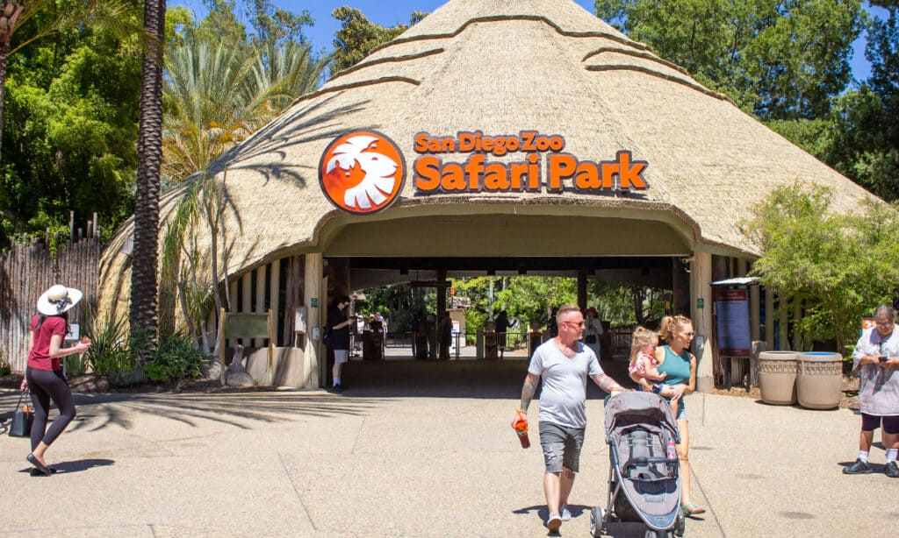
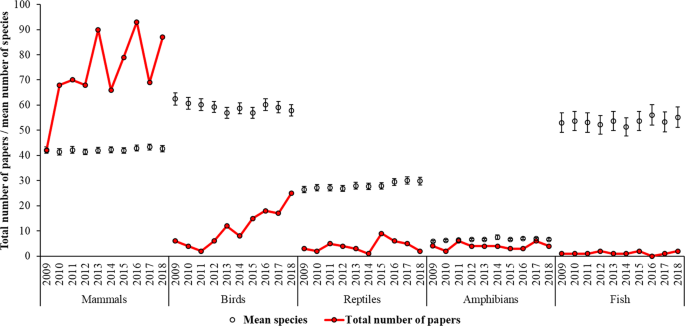
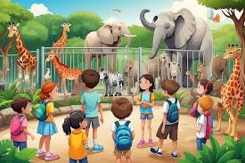
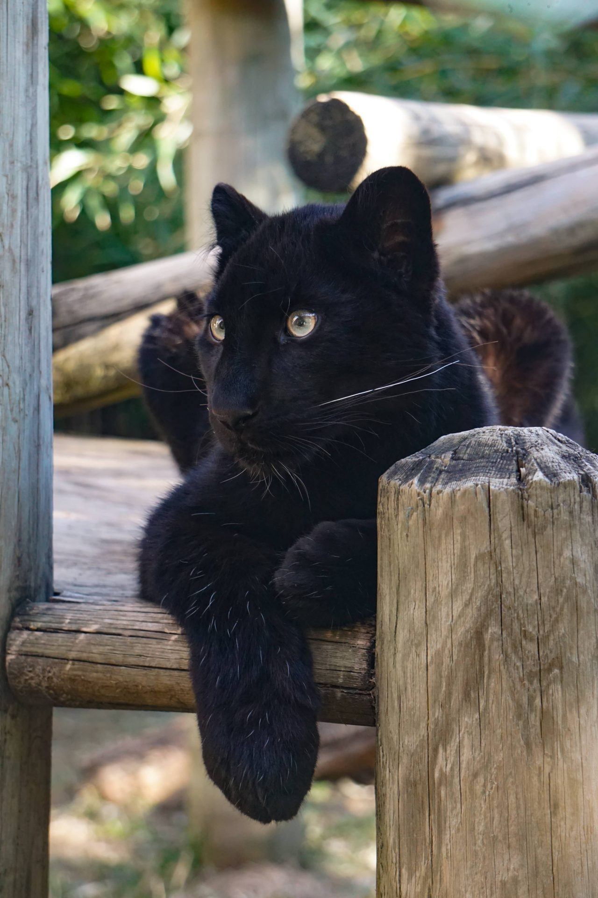

Introduction to Zoos
A zoo is a place where wild animals and, in some instances, domesticated animals are exhibited in captivity. In such an establishment, animals can generally be given more intensive care than is possible in nature reserves or sanctuaries.Far too many species are at risk of extinction due to habitat loss, hunting, and ecological threats. As scientists warn we are in a “Sixth Mass Extinction,” the IUCN Red List of Threatened Species estimates there are over 42,100 species “threatened with extinction.” By maintaining populations of these endangered species, zoos can provide a safety net against the specter of extinction in the wild. In doing so, they serve as modern-day arks that ensure we do not lose vulnerable wildlife from our planet.
Most long-established zoos exhibit general collections of animals, but some formed more recently specialize in particular groups—e.g., primates, big cats, tropical birds, or waterfowl. Marine invertebrates, fishes, and marine mammals are often kept in separate establishments known as aquariums. The word zoo was first used in the late 19th century as a popular abbreviation for the zoological gardens in London. Zoos play a vital role in wildlife conservation, education, and research.
They provide a safe haven for endangered species, allowing them to thrive in environments that mimic their natural habitats.The mean number of species within each taxonomic class (white dot, no line) housed globally in zoological establishments that provided data to the International Zoo Yearbook from 2009 to 2018 compared to the number of publications (red dot, red line), per year, for that taxonomic class. Overall birds are the most speciose taxonomic class housed by zoos globally and show the biggest increase in research output.
Famous Zoos Worldwide
Benefits of Zoos
Maintaining zoos provides numerous benefits, including:
- Conservation Efforts: Zoos participate in breeding programs for endangered species, contributing to their survival.They rescue and rehabilitate injured animals, often working to reintroduce them into the wild. Additionally, zoos raise awareness about conservation issues and collaborate with global organizations to enhance wildlife protection initiatives. Through these efforts, zoos contribute significantly to preserving species and their natural habitats, fostering a deeper understanding of the importance of conservation.
- Education: They offer educational programs that promote awareness of wildlife conservation and environmental issues. They often offer school programs, workshops, and guided tours that enhance learning and encourage stewardship among young visitors. By inspiring curiosity and compassion for animals, zoos play a critical role in shaping a more informed and responsible public, ultimately contributing to conservation efforts and a sustainable future.
- Research: Zoos conduct research that helps in understanding animal behavior and health, which can be applied to conservation efforts.They provide a controlled environment where scientists can study animal behavior, genetics, and health, which can inform conservation strategies both in captivity and in the wild. Research conducted in zoos helps improve breeding programs for endangered species, understand the impacts of environmental changes, and develop better care practices for animals.
Zoos also enhance visitor experiences by providing close-up interactions with animals, promoting understanding and empathy towards wildlife.Zoos serve as vital educational resources, providing visitors with firsthand experiences that enhance their understanding of wildlife and conservation. Through interactive exhibits and educational programs, zoos offer insights into animal behavior, biology, and the ecosystems that support various species. School groups and families alike benefit from guided tours and workshops, which are designed to instill a sense of responsibility towards wildlife conservation. Furthermore, zoos often collaborate with researchers and conservation organizations to disseminate knowledge about endangered species and environmental sustainability, thereby fostering a generation of environmentally conscious citizens who appreciate the importance of biodiversity.
Moreover, they contribute significantly to local economies through tourism and job creation, offering a sustainable model for conservation.Moreover, zoos participate in collaborative research initiatives with universities and conservation organizations, contributing to the global body of knowledge regarding species survival and ecosystem management. Research conducted in zoos can also provide insights into the effects of habitat loss, climate change, and human activity on wildlife populations. Through the establishment of breeding programs for endangered species, zoos not only aid in preserving genetic diversity but also facilitate the study of species adaptation and resilience.
